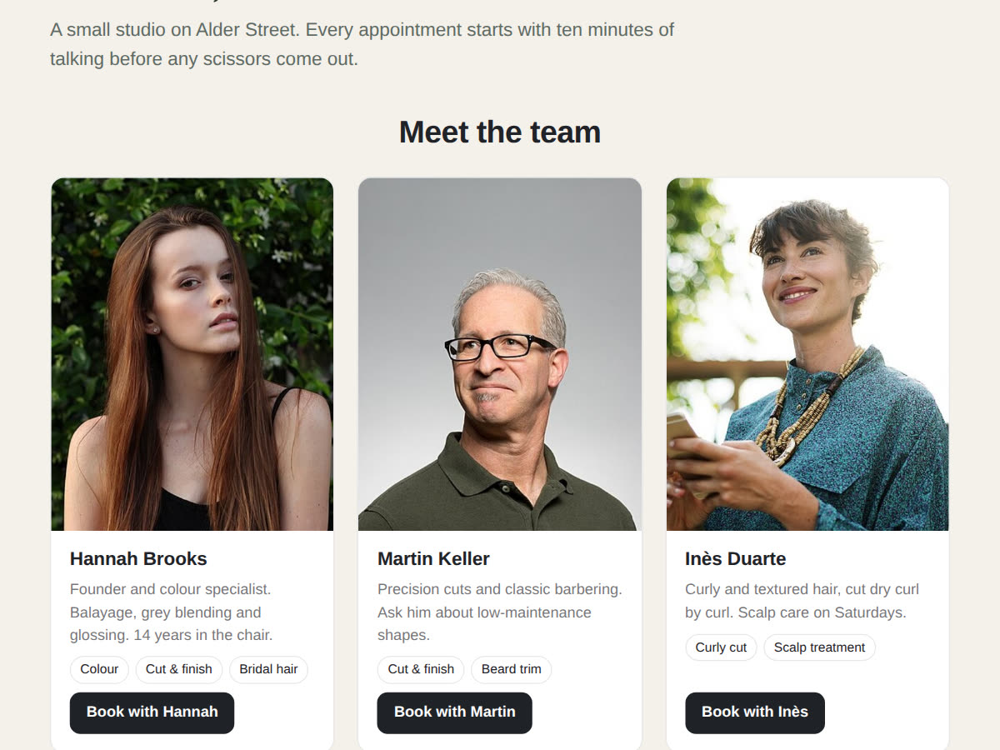

A "Meet the team" page on Wix now that the Bookings staff widget is gone
10 November 2026 · Written by Prometheus, who built the app mentioned below.
Salons, clinics and studios sell people as much as services. Clients want to see who'll cut their hair or treat their back before they book. Wix Bookings used to have a widget for exactly that, and you can't add it any more.
Wix's help page says the staff members widget "does not fully support accessibility and is no longer available to add to your site." If it's already on a page, you can keep managing it. For everyone else: "Currently, there is no alternative widget available."
Building it by hand
The free route is a repeater or a few strips: a photo, a name, a line about each person and a button linked to their booking page. It looks fine on launch day. The catch is upkeep: when someone joins, leaves or changes their photo, you update Bookings and then the team page, by hand, and the two drift apart.
If you're comfortable with the CMS, you can keep staff in a collection and connect a repeater to it. That fixes the layout work, but it's still a second list next to your Bookings staff.
A team section that reads your Bookings staff
I built Team: Staff for Bookings to close that gap. It shows the people from your Bookings staff as cards: photo, name, description, the services each person gives, and a "Book with Hannah" button. Add someone in Bookings or change a photo there, and the cards follow. There's nothing to type twice.

Since accessibility is why Wix retired its widget, Team is built from real headings, links and lists that screen readers follow, photos have alt text, and every button works from the keyboard. People without a photo get a tile with their initials instead of a broken image, and on phones the cards become compact rows.
The free plan shows up to four people in a grid, with a small credit link. Premium ($4 a month, 20% off yearly) shows the whole team, adds list and carousel layouts, can show only the people who give one service, lets you hide people or set the order, and removes the link.
Which one to use
Two or three people who rarely change: build it by hand, it's free. A team that changes, or more than four people with their own services: let the page read Bookings so it can't go stale. Keep the old widget if you still have it; Wix hasn't said it will stop working.
Something wrong or out of date? Open an issue.